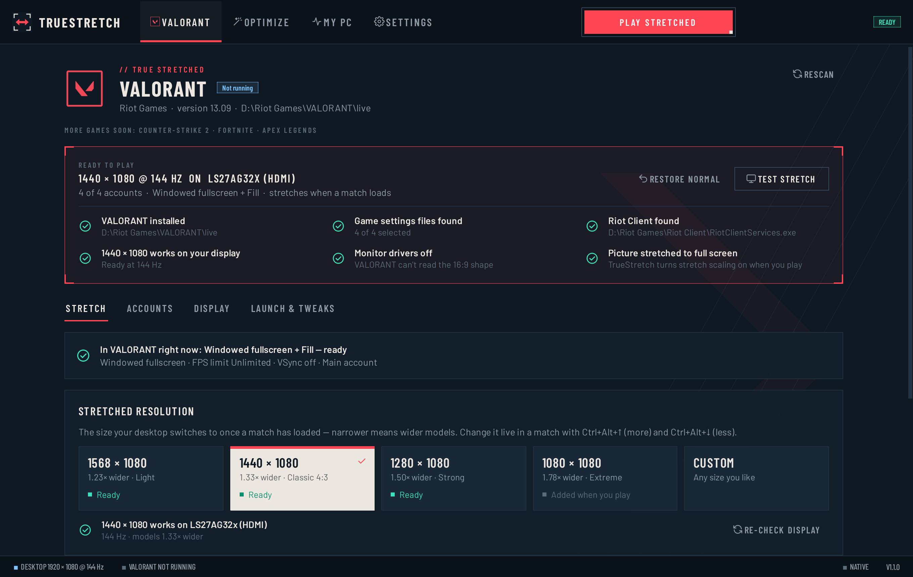
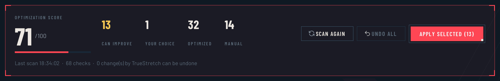
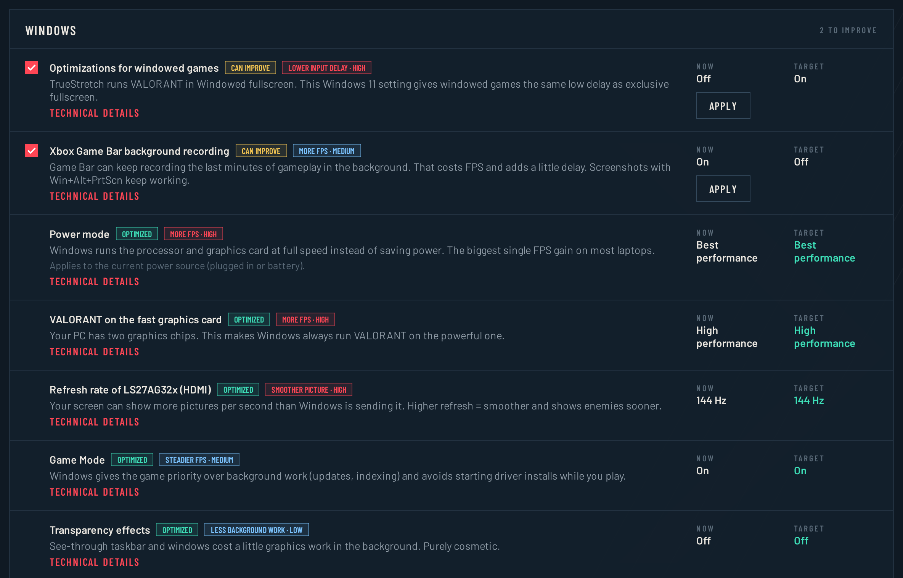
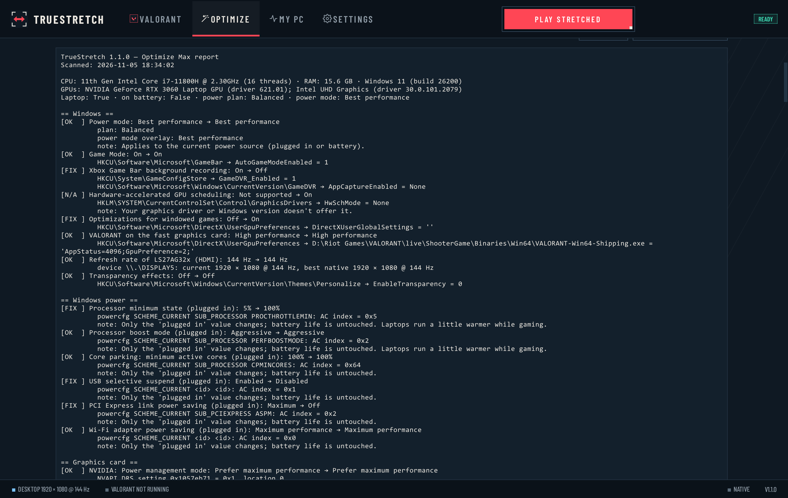

01
One-click play
Play stretched prepares everything and starts VALORANT. Menus stay normal; the stretch switches on once the map has loaded.
// Free · Windows 10 & 11
Wider models and the classic 4:3 feel in VALORANT — without touching a graphics panel or a config file. TrueStretch sets up everything on its own, on any PC.

Built for players who want to play — not dig through driver panels and .ini files.
Play stretched prepares everything and starts VALORANT. Menus stay normal; the stretch switches on once the map has loaded.
Adds the custom resolution to your graphics driver, sets full-screen scaling and the right game settings. No panels, no guides.
Light, Classic 4:3, Strong, Extreme — or custom. Tune it live in a match with Ctrl+Alt+↑/↓.
Scans every FPS and input-delay setting on your PC and lists each change on its own — current value, target, and why.
Backs up every file first and every change can be undone. A guard restores your resolution even if the app crashes.
New versions install in seconds with one click, checked with SHA-256 first. Your settings stay as they are.
VALORANT reads your screen's shape when it starts and when agent select loads. TrueStretch keeps it normal at those moments and stretches only once you're in.
Starts at your real resolution
Sharp, normal UI
Switches as soon as it loads
Back to normal before agent select
Every round, start to end
Download one small .exe — nothing to install.
Open it. A quick tour scans your PC.
Pick how much wider models should be.
Press Play stretched. One Windows prompt, then you're in.
One scan checks everything on your PC that affects VALORANT's FPS and input delay. Each change is listed separately — nothing is bundled, nothing changes until you press Apply.
Power mode, Game Mode, Game Bar recording, windowed-game optimizations, GPU scheduling, refresh rate, Sticky Keys pop-ups, which graphics chip VALORANT really used.
NVIDIA power, texture filtering and VSync, for VALORANT's profile only.
VSync and every graphics quality group, for all your accounts.
Programs that start with Windows and keep running while you play.
Apps and overlays that run alongside the game.
Connection settings that can add delay.
Reflex, Multithreaded Rendering, quality levels, FPS limit — read from your account, each with the value to pick. Plus your last match's real FPS and what limits it.

Summary · what can improve

01
Current value, target, and why. Nothing is bundled, nothing changes until you press Apply.
02
Every change is checked after applying, so you know it actually took.
03
One click puts back the exact original value. It never touches security settings.

// Diagnostics
Every value, where it was read, and every change TrueStretch made. Open the Diagnostics tab in Optimize Max whenever you want the details.
Select a screenshot to view it full size.
Something else? Ask in Discussions or report a problem.
That's normal for free programs that aren't code-signed. Click More info → Run anyway. You can check your file is genuine with the SHA-256 checksum on the release page.
TrueStretch only changes your Windows resolution, graphics-driver settings and VALORANT's own settings file — the same things you could change by hand. It never reads or modifies game memory and never interacts with Vanguard. Riot doesn't officially support true stretched resolution and we can't speak for Riot, so use it at your own risk.
Yes. It adds the resolution through your graphics driver, and if a driver refuses, it automatically uses the closest stretched resolution your screen already has.
No. It only lists what it found. You choose what to apply, each change is verified afterwards, and Undo puts back the exact original value. It never touches security settings.
No. The only network request is an anonymous check for updates on GitHub, which you can turn off in Settings.